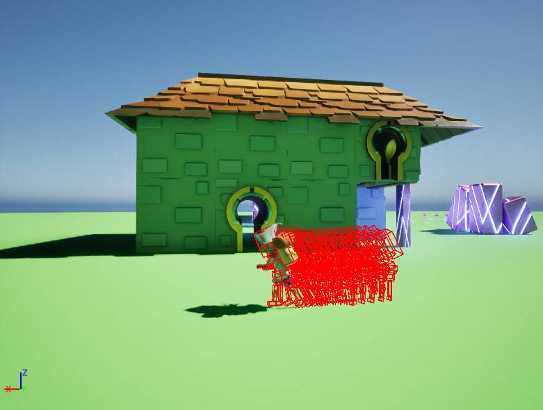

What I have
Learned
Networking In Unreal Engine 5
The primary goal of developing this game was to deepen my understanding of multiplayer functionality in Unreal Engine 5. Throughout the process, I gained valuable insights into replication, the listen server model, and server-client architecture. One of the most intriguing challenges was determining when to use replication, whether to rely on RPCs or replicated variables, and how to optimize network traffic. Although I never intended to release this game, I aimed to maintain a server-authoritative architecture, keeping the client as simple as possible.
Client Side Prediction
Another interesting concept I learned about was client side prediction. This technique enhances the game's responsiveness by allowing the client to predict the outcome of the player's actions, then adjusting if needed when the server responds. This approach is particularly effective for actions that must feel immediate to the player without compromising server authority. A practical example is weapon reloading, where the HUD updates instantly, correcting if necessary when the server confirms the action.
Server Side Rewind
Perhaps the most challenging yet fascinating concept I explored was server-side rewind (SSR), a lag compensation technique that improves both responsiveness and fairness in the game. I implemented SSR in the shooting mechanics. When a player fires a shot, if SSR is enabled, the server rewinds the player's position to the moment of the shot and simulates the event from its perspective. This allows the server to accurately determine whether the shot was a hit or a miss before relaying the result back to the client.
Animation Blending
Since I could only use animations that I got from the Unreal Engine Marketplace, I had to make the most out of them. This led to a deeper understanding of the animation state machine and how to blend animations together. I also learned how to replicate animations effectively, using the already replicated player model, since the animation instance itself isn’t replicated by default.